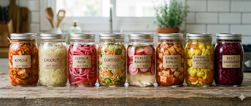

Me gustaría invitarte a un pequeño viaje por la fermentación y mostrarte hasta qué punto puede influir en tu vida diaria.
Vivimos en un ritmo constante, con poco tiempo y muchas exigencias.

Sin embargo, existen fermentos sencillos y otros que requieren tiempo y paciencia.
Para comprender su verdadero valor, hay algo esencial:
Los microorganismos forman parte de nosotros desde el inicio de la vida. Pero factores como el estrés, la alimentación o los antibióticos pueden alterar su equilibrio.
Esto puede reducir bacterias beneficiosas clave para la digestión y la producción de compuestos importantes.
Hoy sabemos que influyen profundamente en nuestra salud.
Dentro de este equilibrio intestinal existe algo que la ciencia está estudiando cada vez más.
Cuando estos microorganismos trabajan con nuestra alimentación, pueden generar sustancias importantes para el bienestar interno. Una de ellas es clave para el siguiente paso.
Puedes ver aquí qué es el butirato.
Aquí es donde puedes empezar a recuperar ese equilibrio… pero antes, una verdad que casi nadie cuenta cuando habla de fermentar en casa.
Intentas inocular Lactobacillus acidophilus en agua del grifo y… nada. Es como plantar semillas en cemento fresco. No prosperan. No burbujean. Se rinden.
El muro no es casualidad: es químico y está diseñado para matar vida microscópica.
Los acidophilus, esas bacterias Gram-positivas tan resistentes en nuestro intestino, se convierten en frágiles ante los oxidantes del grifo. El cloro residual desnaturaliza sus proteínas de superficie en cuestión de segundos.
Luego viene el sabotaje del pH: el agua municipal se ajusta con cal o sosa… pero ese mismo ajuste destroza el gradiente electroquímico que las bacterias necesitan para alimentarse y multiplicarse.
Y las cloraminas rematan la faena: actúan como un bacteriostático silencioso, frenando la fermentación incluso en dosis mínimas.
Nos han enseñado que el agua segura es la que huele a piscina, pero la química nos dice lo contrario: el agua clorada es un parche de salud pública que sacrifica la salud biológica a largo plazo. Recoger agua de manantial no es volver al pasado, es elegir un sustrato vivo donde la microbiota puede protegernos de forma natural.
La mayoría de consejos sobre agua se quedan en la superficie: "deja reposar 24 horas", "usa filtro de carbono". Pero el problema real son los cloratos: invisibles, inodoros y tercos como un burócrata.
Funcionan como un antibiótico residual de bajo espectro. Por eso mucha gente gasta dinero en probióticos o bacterias para su estanque y nunca ve resultados.
El agua de manantial salta por encima de toda esa ingeniería agresiva. Pasa de ser un líquido que ataca la vida a uno que la sostiene.
Si no tienes acceso inmediato a agua de manantial, la shungita es una opción de emergencia. Este mineral rico en fullerenos neutraliza la carga oxidativa de los residuos químicos.
Deja el agua en contacto durante 4 a 5 días. Dicen que la estructura molecular y los efectos de los subproductos del cloro se amortiguan.
Resultado: Estuve un par de años usando shungita y desde luego sabe mucho mejor.El agua pierde ese matiz residual y se vuelve neutra.
La clase de piedra shungita que usé la compré muy barata y se denominaba "shungita de agua", pero al parecer hay varias calidades y estaría bien investigarlas.
Nota de campo: para toda la familia, manantial es lo ideal.Para experimentos pequeños, la shungita es una gran herramienta.
Referencias técnicas:
• Guidelines for Canadian Drinking Water Quality – Chlorite and Chlorate
• Toxicity of chlorate and chlorite… (PubMed/NIH)
• The Effects of Chlorinated Drinking Water… (MDPI)
• Fullerenos – Nobel 1996 (Curl, Kroto y Smalley)
No hay que obligar al cuerpo a tomar nada.
Una fermentación bien hecha no genera rechazo. Al contrario: invita.
Como reconocer una buena fermentación
También hay momentos en los que algo simplemente no huele bien, no sabe bien o no apetece.
Y no pasa nada.
No todo lo fermentado es automáticamente adecuado en ese momento.
No todo lo que es técnicamente consumible es lo que tu cuerpo necesita.
Aprender a reconocer esa diferencia también forma parte del proceso.
No todos los alimentos fermentan de la misma forma. Cada tipo de fermentación depende de los microorganismos implicados, el alimento base y las condiciones del proceso. Entender estas diferencias ayuda a saber qué estás haciendo y por qué funciona.
Cada fermentación depende del tipo de microorganismo, el alimento base y el entorno: temperatura, tiempo y oxígeno. Por eso no todos los fermentos se comportan igual — ni siquiera dos tandas del mismo fermento siempre dan el mismo resultado.
🌡️ La temperatura es uno de los factores más decisivos en cualquier fermentación. Ver guía completa sobre temperatura y crecimiento microbiano →
Existe un tipo de fermentación diferente a la de las verduras o las legumbres. Son microbios de origen humano — bacterias que durante miles de generaciones convivieron con nosotros — y que hoy la mayoría hemos perdido o atenuado por el estrés, los antibióticos y la vida moderna.
El cardiólogo Dr. William Davis, autor de Super Gut, lleva años investigando cómo restaurarlos en casa mediante fermentación prolongada. La FDA no permite llamarlos "yogur" porque no contienen los cultivos tradicionales, así que en su comunidad los llaman progurt, nogurt o simplemente fermentado lácteo.
Lo que los distingue del yogur comercial es el tiempo: 36 horas de fermentación en vez de 6–12. Eso permite que el microorganismo se duplique 12 veces, alcanzando cerca de 300.000 millones de bacterias por media taza. Se añade además fibra prebiótica al cultivo, como fertilizante que alimenta su reproducción.
Lo que más me sorprende al hacerlos es lo digestivos que son. No son suplementos: son microorganismos que, cultivados correctamente, producen sustancias con efecto real en el cuerpo — bacteriocinas que actúan como antibióticos naturales, moléculas que influyen en el sueño, el estado de ánimo o la piel.
El L. reuteri se encuentra en la leche materna. Es posible que mucha gente lo haya perdido — por antibióticos, por estrés, por el estilo de vida actual. Y con él, efectos que quizás ni relacionamos con el intestino.
Llevo tiempo haciendo en casa el L. reuteri y el L. gasseri — el gasseri especialmente me ha ayudado con los gases y la digestión. Pronto añadiré el L. crispatus. El microbioma es un campo donde constantemente se descubren cosas nuevas, es un tema inmenso y aún con mucho por explorar.
Microbios humanos que se pueden fermentar en casa:
Si quieres investigar más: drdavisinfinitehealth.com y el libro Super Gut.